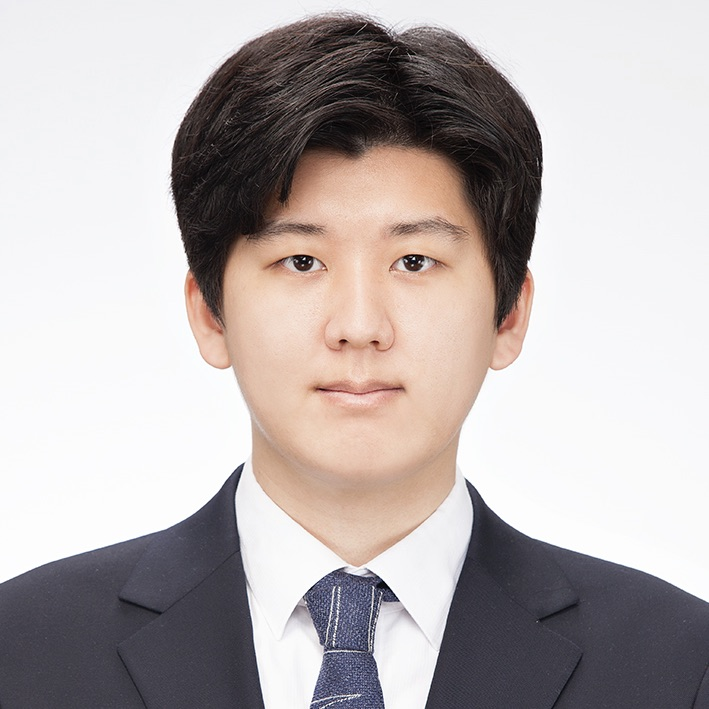
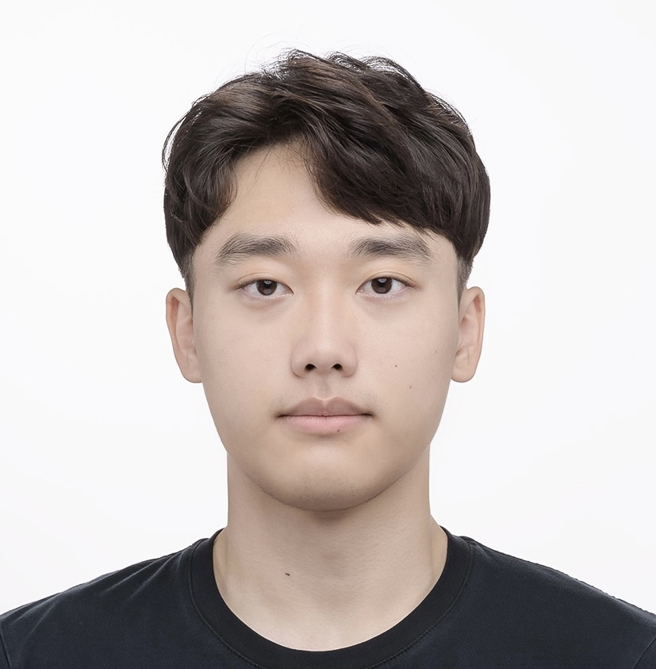
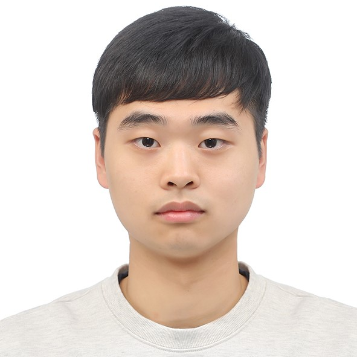
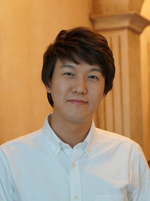

| Prof. Byoung-Tak Zhang Contact : (btzhang@bi.snu.ac.kr) Research Area : Cognitive Robotics, Episodic Memory, Hypernetworks |
|  | Youngjae Yoo Contact : (yjyoo@bi.snu.ac.kr) Research Area : 3D Vision for manipulation robot, Self-learning machine |
| Jaein Kim Contact : (jykim@bi.snu.ac.kr) Research Area : Simultaneous planning of robot base at home environment |
| Minji Kim Contact : (mjkim@bi.snu.ac.kr) Research Area : Reinforcement learning & Robot learning |
| Hyejung Yoon Contact : (hjyoon@bi.snu.ac.kr) Research Area : Learning by conversation with robot |
|  | Juno Kim Contact : (jokim@bi.snu.ac.kr) Research Area : Reinforcement learning & Vision language with robot |
| Yesol Park Contact : (yspark@bi.snu.ac.kr) Research Area : Reinforcement learning & Robot learning |
|  | Seunghyun Lim Contact : (shlim@bi.snu.ac.kr) Research Area : Visual perception for mobile manipulation robot |
| Sujin Jeon Contact : (sjjeon@bi.snu.ac.kr) Research Area : Visual calibration for mobile manipulation robot |
|  | Chung-Yeon Lee Contact : (cylee@bi.snu.ac.kr) Research Area : Representation learning, Robot perception, Cognitive neuroscience |